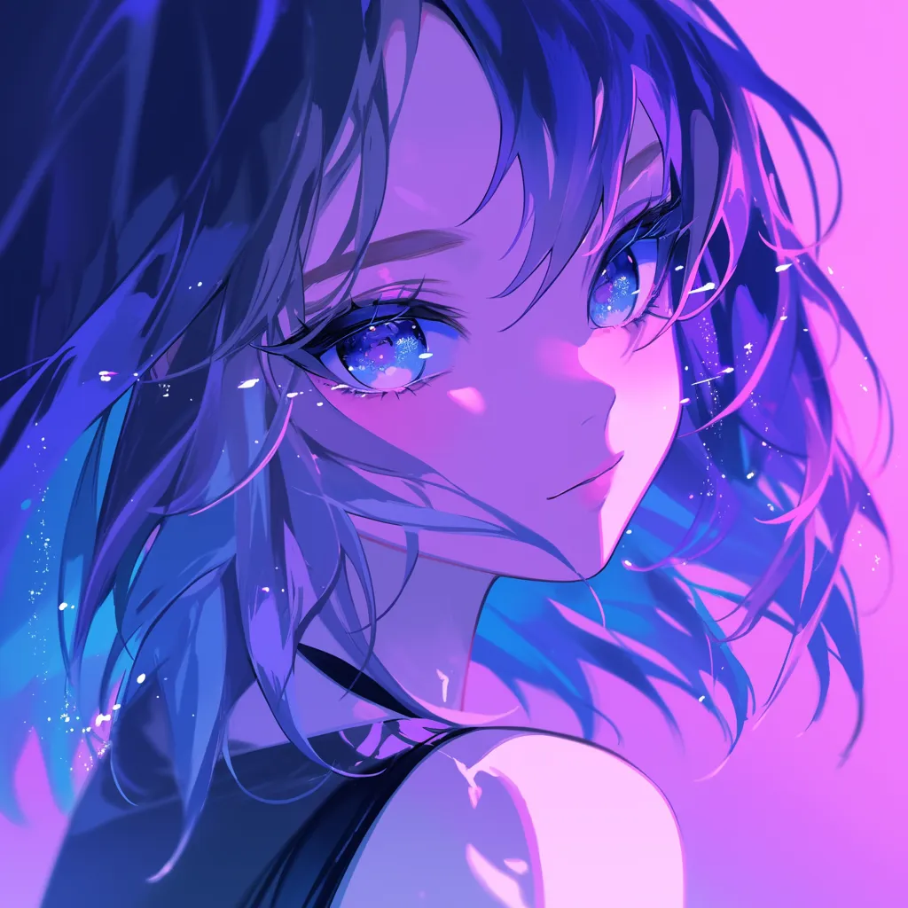

PERSONAL TRANSMISSION / 001
记录屏幕之外的微光、灵感与还没有命名的未来。
BLUE HOUR// 00:42
SELECTED WRITING
RANDOM SIGNALS
这是一个不太严肃的角落。关于喜欢的动画、游戏、展览，以及每一件让我停下来的小事。

▁▃▂▅▁▆▂▃
LITTLE LOGS
BEHIND THE SCREEN
初次见面的朋友初次见面，好久不见的朋友好久不见。
LUSIYA'S NOTE